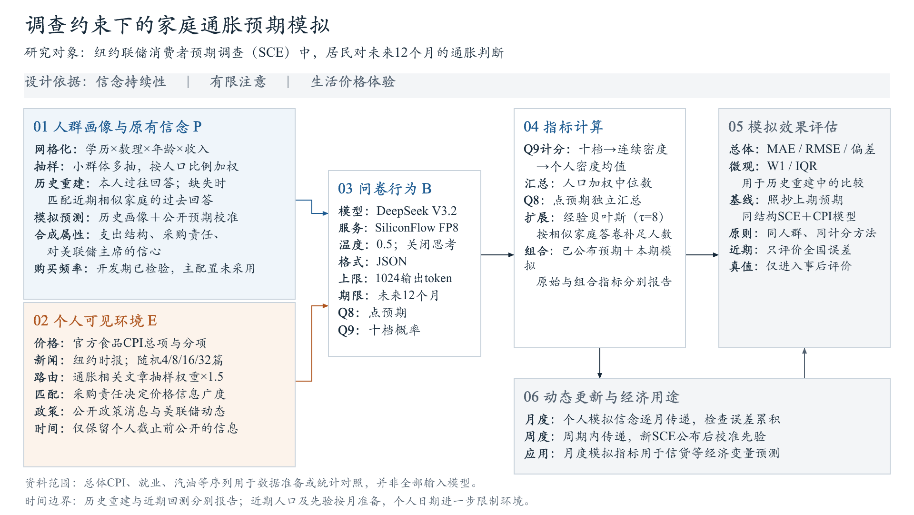

面向评委的SCE方法概览图 · v2
采用楷体与Times New Roman；文字已放入方框自身的文本区，按“维度：做法”分层。动态与经济用途接入右侧流程，旧版保留。

两个需要保留的事实边界
采购责任与对美联储主席的信心是合成属性；购买频率已作开发期检验，但未纳入最终主提示。已准备的总体CPI、就业、汽油等宏观资料，也不等于全部直接输入模型。
图中主要价格输入是食品CPI总项和分项。“通胀相关新闻权重×1.5”调整的是新闻抽样，不是把CPI数值放大。完整说明见图注、字段核对及源文件说明。
本轮不改研究结果或论文，不新增模型调用。图仍为可迭代稿。